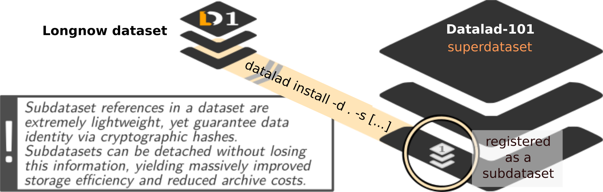

Data management
Local version control workflows

Local version control

Advice:
- Save meaningful units of change
- Attach helpful commit messages
Dataset Nesting
commit 8fdf62acd0bf1e99ebcb6c466edc994a5f4013ba
Author: DataLad Demo demo@datalad.org
Date: Sat Oct 26 15:54:44 2019 +0200
[DATALAD] Recorded changes
diff --git a/.gitmodules b/.gitmodules
new file mode 100644
index 0000000..1b59b8c
--- /dev/null
+++ b/.gitmodules
@@ -0,0 +1,4 @@
+[submodule "recordings/longnow"]
+ path = recordings/longnow
+ url = https://github.com/datalad-datasets/longnow-podcasts.git
+ datalad-id = b3ca2718-8901-11e8-99aa-a0369f7c647e
diff --git a/recordings/longnow b/recordings/longnow
new file mode 160000
index 0000000..dcc34fb
--- /dev/null
+++ b/recordings/longnow
@@ -0,0 +1 @@
+Subproject commit dcc34fbe669b06ced84ced381ba0db21cf5e665f Summary
Local version control
- datalad create creates an empty dataset. Configurations such as -c yoda or -c text2git are useful
- A dataset has a history to track files and their modifications. Built-in Git tools (git log) or external tools (such as tig) allow to explore the history.
- datalad save records the current state of the dataset to the history. Specify a concise commit message to summarize the change, and provide a path to precise files if several unrelated modifications exist in your dataset.
- datalad status reports the current state of the dataset.
Summary
Dataset consumption & nesting
- A dataset can be installed with datalad install. It can be installed “on its own”, or within an existing dataset.
- Specify the location of an existing dataset (--source/-s), and a path to the desired installation location. Without a path, the dataset will be installed in the current directory, with its original name
- If a dataset is installed inside of a dataset as a subdataset, the --dataset/-d option needs to specify the root of the superdataset.
- After installation, only small files and metadata about file availability are present locally. To retrieve actual file content of larger files, datalad get PATH downloads large file content on demand.
- datalad status --annex or datalad status --annex all are helpful to determine total repository size and the amount of data that is present locally
Now what I can do with that?
- Version control changing small files (code scripts, manuscripts (if they are textfiles), ...)
- Add large files to a dataset history
- Meaninful and well-described commits will make future interactions with the dataset history easier
- Consume existing datasets
- Link datasets together
How does a here-document work?
$ cat << EOT > notes.txt
One can create a new dataset with 'datalad create [--description] PATH'.
The dataset is created empty
EOT
- Two delimiting identifiers (EOT) wrap any amount of text into a stream
- The
<<characters redirect the stream into standard input for thecatcommand - The
>character redirects the standard output ofcatand writes it into a new filenotes.txt
Why is it used?
- Allows pretty formating (e.g., line breaks)
- Allows writing documents from the terminal